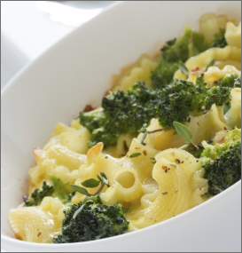
Macarrão de Talos
INGREDIENTES:
300 Gramas de macarrão parafuso
4 Dentes de alho
3Colheres de sopa de azeite
1 Xícara de chá de ramos de cenoura
3 Xícaras de chá de talos (brócolis, beterraba, couve)
Sal a gosto.
MODO DE PREPARO:
Em uma panela, doure os dentes de alho inteiros no azeite.
Acrescente os talos, os ramos, e refogue junto com o
macarrão cozido al dente e verifique o sal.
 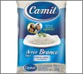
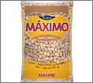
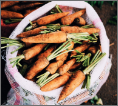
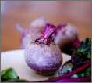
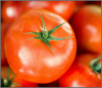
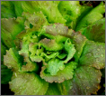
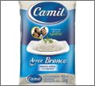
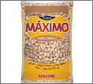
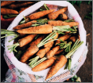
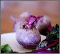
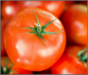
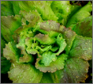